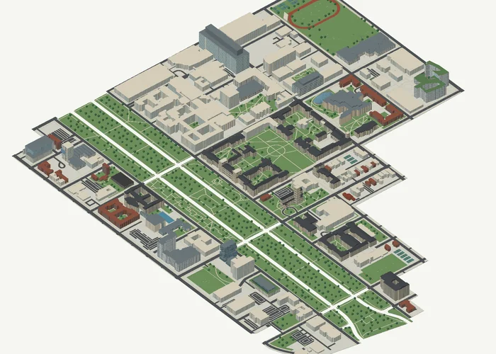
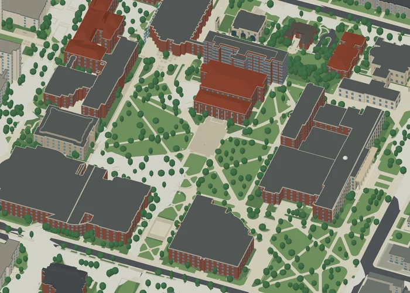
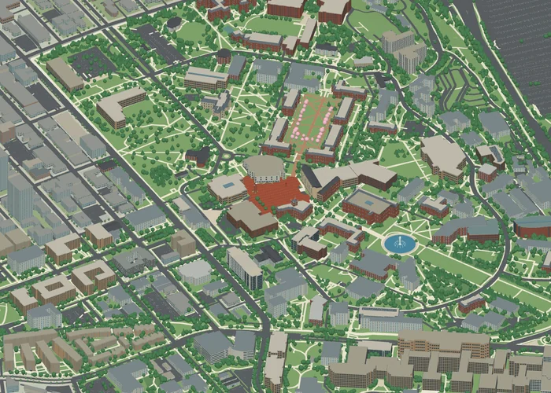
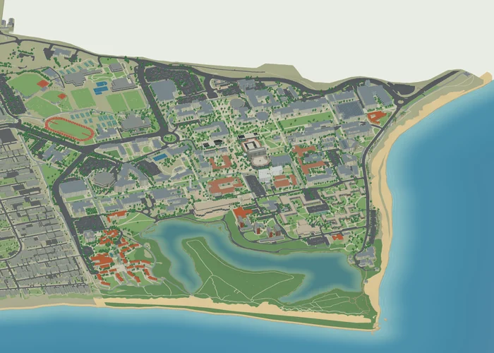

An independent spatial atlas
A new perspectiveon campus.
Four campuses, rendered in three dimensions. Explore the buildings, landscapes, and spaces in between.
Explore the collection01—04The campus collection
Choose your next point of view.
Start with a place. Discover its spaces.

UChicagoUniversity of Chicago
Gothic quadrangles, a green Midway, and a campus woven into Hyde Park.

UMichUniversity of Michigan
From the heart of The Diag to North Campus, discover Ann Arbor in layers.

UWUniversity of Washington
Brick courts, cherry-lined walks, and a campus reaching toward the water.

UC Santa BarbaraUC Santa Barbara
Follow campus paths to the lagoon, coastal bluffs, and the Pacific shoreline.
3D / CAD / WEB
Look closer. Go further.
Each campus opens into its own interactive architectural model.
Navigate in three dimensions
Orbit, pan, and zoom through buildings and outdoor spaces.
Explore the layers
Find a landmark or examine the campus one building at a time.
Take the model with you
Continue your exploration with layered Rhino and 3DS downloads.